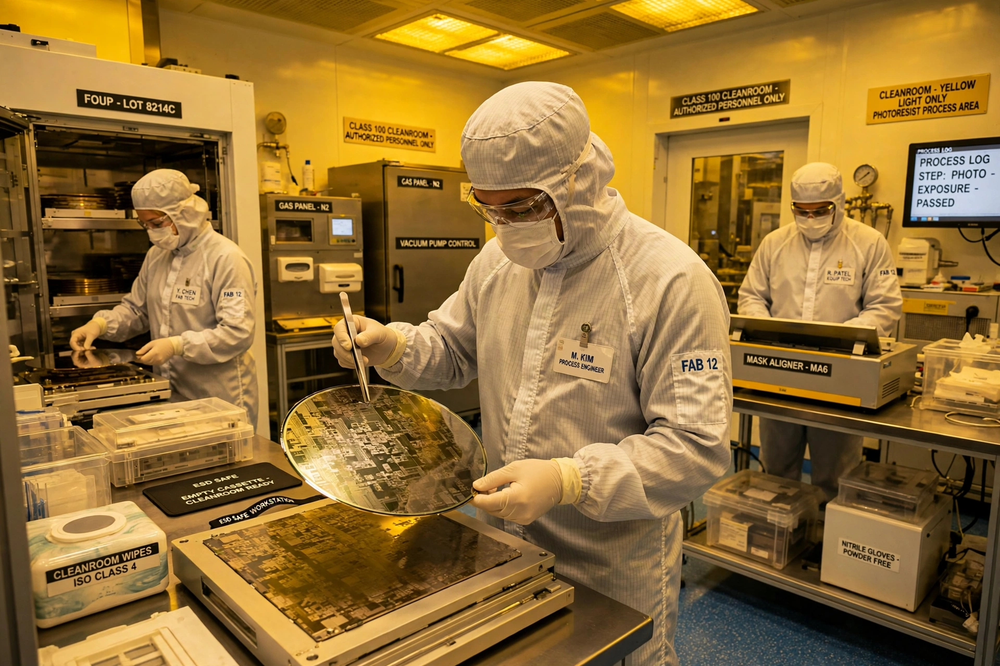

Photolithography is a process used in the manufacturing of integrated circuits and other microfabricated devices. It involves using light — today usually ultraviolet light projected through a photomask, or reticle — to transfer a geometric pattern onto a light-sensitive photoresist coating on a substrate, typically a silicon wafer. The exposed pattern is then developed, and material is etched, deposited or implanted in the opened areas before the resist is stripped away. The cycle is repeated dozens of times to build up the layers of a chip.
A typical sequence includes wafer cleaning and dehydration, spin-coating of photoresist, soft bake, alignment and exposure in a stepper or scanner, post-exposure bake, development, hard bake, and finally etching or ion implantation. Resolution is governed by the Rayleigh criterion, improving with shorter wavelengths and higher numerical aperture. Production lithography progressed from mercury-lamp g-line (436 nm) and i-line (365 nm) sources to KrF (248 nm) and ArF (193 nm) excimer lasers, with immersion lithography extending ArF by placing water between lens and wafer.
Since the late 2010s, leading-edge chips have used extreme ultraviolet lithography (EUV) at 13.5 nm, supplied almost exclusively by the Dutch company ASML, whose machines use laser-produced tin plasmas and reflective optics in vacuum.
The technique descends from photographic printing and was adapted to semiconductor manufacture in the late 1950s at firms such as Fairchild Semiconductor, becoming the foundational patterning method of the microelectronics industry.